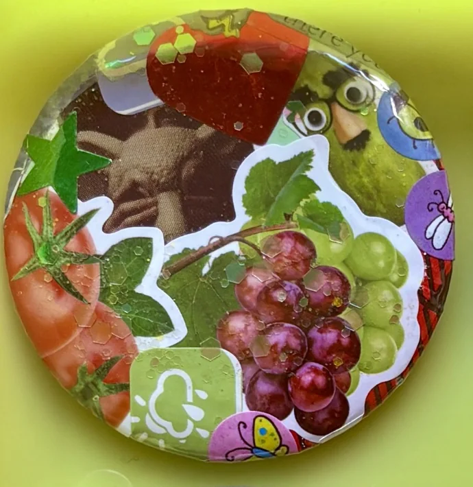

things / no. 00011 · collage pin
date unrecorded
sticky fruit

ingredients:
a pickle in disguise +more fruit & veggies, glitter,
unused planner stickers, gift wrap, & an album cover from
a 2010-era alternative band (free promo sticker)
may contain: way too many stickers
inventory status:
found a new home ♡
filed under: things